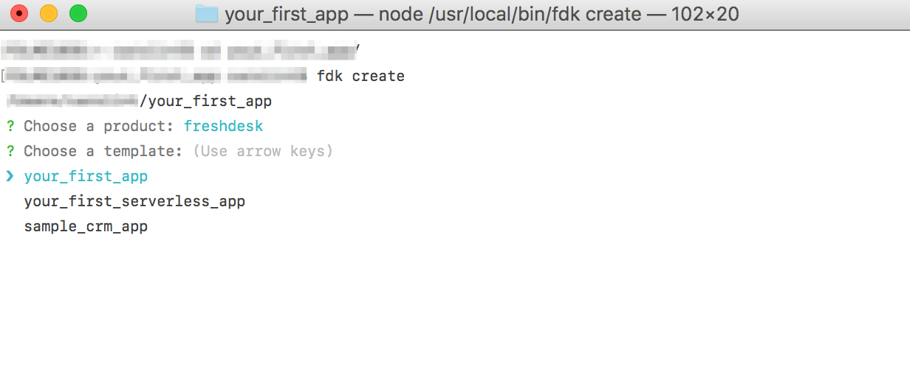
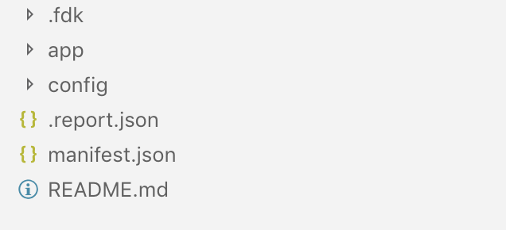

Welcome to the Freshdesk Data API tutorial. You can use these APIs to retrieve information about different objects on a page.
What you'll learn
- How to create a simple sample app
- How to use Data API to get contact and logged-in agent details
Make sure you have the following prerequisites satisfied before diving into the tutorial.

Make sure you have the following prerequisites satisfied before diving into the tutorial.
- You need to have Node 8 installed.
- You need to have the latest FDK installed.
FDK offers scaffolding and it could give a head-start. Open the terminal window, navigate to an empty directory in which you want to create your app, and follow the given steps.
- At the prompt, type
fdk create - From the product list, select a product and press Enter.
- From the template list, select your_first_app and press Enter.

This will create a project structure like this :

Let's take a closer look at the files that were created in the app.
manifest.json
The manifest file is used to store configuration information for the app.
manifest.json
{
"platform-version": "2.0",
"product": {
"freshdesk": {
"location": {
"ticket_sidebar": {
"url": "template.html",
"icon": "icon.svg"
}
}
}
}
}
The platform-version key is automatically generated and used to infer the platform version that your app uses. This is used to ensure backward compatibility when a new version of the framework is released.
The product key is used to specify the product and location in which the app is rendered. This app is to be rendered in the ticket_sidebar location in the Ticket Details page. url and icon specify the path (from the /app directory) to the template and icon files rendered in that location.
You can view the complete list of where apps can be rendered in the App Locations section.
app/icon.svg
This is the app icon specified in the manifest file. It is displayed at the right-hand side of the Ticket Details page. The app icon file is of SVG type with a resolution of 64 x 64 pixels.
app/template.html
Apps in the new Freshdesk UI are rendered inside an IFrame. This file contains the HTML markup for the app. It is a simple template that displays an image along with text which is dynamically generated in the app.js file.
template.html
<html>
<head>
<script src="https://static.freshdev.io/fdk/2.0/assets/fresh_client.js"></script>
<script src="https://ajax.googleapis.com/ajax/libs/jquery/3.2.0/jquery.min.js"></script>
<script src="app.js"></script>
<link rel="stylesheet" type="text/css" href="https://static.freshdev.io/fdk/2.0/assets/freshdesk.css">
<link rel="stylesheet" type="text/css" href="style.css">
</head>
<body>
<div class="logo"></div>
<p id="apptext"></p>
</body>
</html>
The template.html file includes the following:
- fresh_client.js - This JS library enables the app to communicate with the parent page. The file is mandatory as the app runs in an IFrame and needs to communicate with the parent page in order to access data, listen to events, and trigger interface actions.
- jquery - This is used by app.js in line 9 where it adds text to the #apptext element.
- app.js - Establishes connection with the parent page to retrieve information about the ticket requester.
- freshdesk.css - Importing this css file ensures that the app maintains a UI that is consistent with the parent page. Anytime the parent page is redesigned, we update this stylesheet so that the app remains consistent.
- style.css - App specific stylesheet that contains style information for various UI components of the app.
You can use these APIs to retrieve information about different objects on a page.
Using 'contact' object
function getContactData(client) {
client.data.get('contact').then((data) => {
$('#apptext').text(`Ticket created by ${data.contact.name}`);
congratulations();
});
}